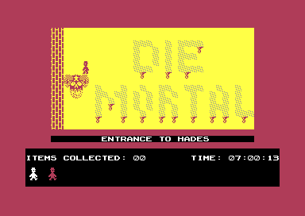
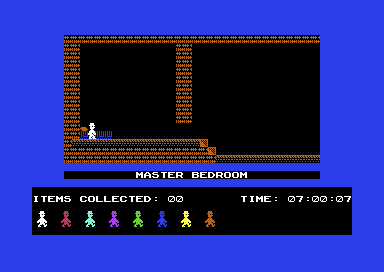

<meta charset="utf-8">
<meta name="viewport" content="width=device-width, initial-scale=1">
<title>{{title}}</title>
<link rel="preconnect" href="https://fonts.googleapis.com">
<link rel="stylesheet" href="https://fonts.googleapis.com/css2?family=Lato:wght@400;700;900&family=IBM+Plex+Mono:wght@400;500&display=swap">
<style>
:root{
  --bg:#23262d; --paper:#e9e7e1; --surface:#ffffff; --surface-2:#f1efea; --line:#d5d3cc; --line-soft:#e0ded8;
  --ink:#2f3136; --ink-soft:#55585f; --ink-mute:#80838a;
  --link:#1f5fa8; --link-hover:#154480; --accent:#1f5fa8;
  --amber:#c25a00; --cyan:#1f5fa8; --coral:#d04a3a; --green:#2a8a4a; --violet:#4a5bd6; --hl:#fff0c2;
  --chip:#2f3136; --chip-ink:#ffffff;
  --c64blue:#40318d; --c64grey:#686868;
  --fd:'Lato',system-ui,sans-serif; --fb:'Lato',system-ui,sans-serif; --fm:'IBM Plex Mono',ui-monospace,Menlo,monospace;
  --col:1080px; --gx:68px; --fs:17px; --lh:1.6; --hw:900; --h1:46px; --h2:26px; --sy:48px; --pp:26px; --r:10px;
  --plate-shadow:0 1px 2px rgba(0,0,0,.05),0 4px 14px rgba(0,0,0,.05);
}
*{box-sizing:border-box}
html{background:var(--bg);min-height:100%}
body{background:var(--paper);color:var(--ink);font-family:var(--fb);font-size:var(--fs);line-height:var(--lh);max-width:var(--col);margin:0 auto;min-height:100vh;padding:0 0 4rem}
h1,h2,h3{font-weight:var(--hw);letter-spacing:-.01em;text-wrap:balance;color:var(--ink);margin:0}
.wrap{padding:0 var(--gx)}
.hero{padding:48px var(--gx) 8px;text-align:left}
.eyebrow{font-family:var(--fm);font-size:12px;letter-spacing:.08em;text-transform:uppercase;color:var(--ink-mute);margin:0 0 10px}
.hero h1{font-size:var(--h1);line-height:1.15;letter-spacing:-.02em;margin:0 0 14px}
.hero .sub{margin:0 0 .6em;color:var(--ink-soft)}
section{padding:var(--sy) 0 24px}
.fig{font-family:var(--fm);font-size:12px;letter-spacing:.08em;text-transform:uppercase;color:var(--ink-mute);margin:0 0 10px}
h2.t{font-size:var(--h2);margin-bottom:12px}
h3{font-size:17px;margin:22px 0 8px}
.lede{color:var(--ink-soft);margin:0 0 30px}
.plate{background:var(--surface);border:1px solid var(--line);border-radius:var(--r);padding:var(--pp);box-shadow:var(--plate-shadow)}
.cap{font-size:14px;color:var(--ink-mute);margin-top:14px;line-height:1.55}
.cap b{color:var(--ink);font-weight:700}
code{font-family:var(--fm);font-size:.82em;background:var(--chip);color:var(--chip-ink);border-radius:4px;padding:2px 6px;white-space:nowrap}
table.jw-t{border-collapse:collapse;width:100%;font-size:14.5px}
table.jw-t th,table.jw-t td{text-align:left;padding:6px 9px;border-bottom:1px solid var(--line-soft);vertical-align:top}
table.jw-t th{font-weight:700;color:var(--ink-soft)}
table.jw-t td.jw-n{font-family:var(--fm);font-size:13px;white-space:nowrap}
.jw-scroll{overflow-x:auto}
.jw-row{display:flex;flex-wrap:wrap;gap:8px;align-items:center;margin:0 0 14px}
button.jw-b{font-family:var(--fm);font-size:13px;padding:6px 11px;border:1px solid var(--line);border-radius:6px;background:var(--surface-2);color:var(--ink);cursor:pointer}
button.jw-b[aria-pressed="true"]{background:var(--chip);color:var(--chip-ink);border-color:var(--chip)}
button.jw-b:hover{border-color:var(--ink-mute)}
.jw-pics{display:grid;grid-template-columns:repeat(auto-fit,minmax(260px,1fr));gap:16px}
.jw-pics img{width:100%;height:auto;display:block;image-rendering:pixelated;border-radius:4px}
.jw-scr{width:100%;height:auto;display:block;image-rendering:pixelated;border-radius:4px;background:#000}
.jw-mid{max-width:768px}
.jw-hex{font-family:var(--fm);font-size:12px;line-height:1.5;display:grid;grid-template-columns:auto repeat(16,1fr);gap:1px 2px;margin:16px 0 8px;max-width:640px}
.jw-hex span{text-align:center;border-radius:3px;padding:0 1px}
.jw-hex span.jw-ad{color:var(--ink-mute);text-align:right;padding-right:6px}
.jw-hex span[data-f]{cursor:pointer}
.jw-hex span.jw-on{outline:2px solid var(--ink);outline-offset:-1px}
.jw-fields{display:flex;flex-wrap:wrap;gap:6px;margin:6px 0 10px}
.jw-fields button{font-family:var(--fm);font-size:12.5px;padding:4px 9px;border-radius:5px;border:1px solid var(--line);cursor:pointer;color:var(--ink)}
.jw-fields button[aria-pressed="true"]{outline:2px solid var(--ink)}
.jw-say{min-height:3.2em;font-size:15px;margin:6px 0 0}
.jw-gal{display:grid;grid-template-columns:repeat(auto-fill,minmax(44px,1fr));gap:3px;background:#101114;padding:6px;border-radius:6px}
.jw-gal canvas{width:100%;height:auto;image-rendering:pixelated;cursor:pointer;border-radius:2px;display:block}
.jw-gal canvas.jw-on{outline:2px solid #f5c542}
.jw-kb{display:flex;flex-direction:column;gap:4px;font-family:var(--fm);font-size:11px;overflow-x:auto;padding-bottom:4px}
.jw-kr{display:flex;gap:4px}
.jw-k{min-width:30px;height:30px;padding:0 4px;display:flex;align-items:center;justify-content:center;border-radius:4px;background:#4c4844;color:#f2efe9;white-space:nowrap;flex:none}
.jw-k.jw-l{background:#1f5fa8}.jw-k.jw-r{background:#2a8a4a}.jw-k.jw-j{background:#c25a00}.jw-k.jw-p{background:#7a52a8}.jw-k.jw-o{background:#d04a3a}
.jw-key{display:flex;flex-wrap:wrap;gap:6px 16px;font-size:14px;margin-top:12px}
.jw-key i{display:inline-block;width:12px;height:12px;border-radius:3px;margin-right:6px;vertical-align:-1px}
.jw-chart{width:100%;height:auto;display:block}
.jw-out{font-family:var(--fm);font-size:13.5px}
input.jw-range{width:100%;max-width:480px}
.jw-two{display:grid;grid-template-columns:1fr 1fr;gap:14px}
.jw-two pre,.jw-pre{font-family:var(--fm);font-size:12px;line-height:1.5;background:#17181c;color:#e8e6e1;border-radius:6px;padding:10px 12px;margin:0;overflow:auto;max-height:420px;tab-size:8;white-space:pre}
.jw-two h3{margin:0 0 6px;font-size:14px}
.jw-card{width:100%;max-width:640px;height:auto;display:block;cursor:pointer;background:#f6f4ee;border-radius:6px}
.jw-sel{font-family:var(--fm);font-size:14px;padding:5px 8px;border:1px solid var(--line);border-radius:6px;background:var(--surface)}
.jw-shot{width:100%;max-width:768px;height:auto;display:block;image-rendering:pixelated;border-radius:4px}
.jw-cmd{font-family:var(--fm);font-size:14px;background:#17181c;color:#e8e6e1;border-radius:6px;padding:10px 12px;margin:0 0 1em;overflow-x:auto}
td.jw-no{color:var(--coral);font-weight:700}
td.jw-yes{color:var(--green);font-weight:700}
@media (max-width:760px){.jw-two{grid-template-columns:1fr}}
@media (max-width:760px){:root{--gx:20px;--h1:34px;--pp:16px}.jw-hex{font-size:10px}}
</style>

<!-- tabs -->
<header class="hero">
  <p class="eyebrow">{{year}} · {{publisher}}</p>
  <h1>{{title}}</h1>
  <p class="sub">Two falls in the house are replayed on every life until the game is over. The room-select cheat, the copy protection and scraps of the source code are all still in memory, one byte or one call away from working.</p>
</header>
<main class="wrap">

<section id="fall">
  <p class="fig">01 · Bug</p>
  <h2 class="t">Bug: one jump off the Watch Tower costs all nine lives</h2>
  <p class="lede">When Willy dies he goes back to where he came into the room, in the state he came in. If he came in falling, he falls again.</p>
  <div class="plate">
    <div class="jw-row"><button class="jw-b" type="button" id="jw-fj">Jump off the tower</button><button class="jw-b" type="button" id="jw-fp" aria-pressed="false">Pause</button></div>
    <canvas id="jw-fc" class="jw-scr" width="512" height="576" style="max-width:512px"></canvas>
    <div class="jw-scroll"><table class="jw-t" style="max-width:512px;margin-top:10px"><tr><th>Room</th><th>Height</th><th>Fall count</th><th>Deadly</th><th>Spare lives</th></tr>
      <tr><td id="jw-f0"></td><td class="jw-n" id="jw-f1"></td><td class="jw-n" id="jw-f2"></td><td class="jw-n" id="jw-f3"></td><td class="jw-n" id="jw-f4"></td></tr></table></div>
    <p class="cap"><b>The fall code at <code>$11FB</code>, ported</b> and run on the cells of the two rooms, the Watch Tower above We Must Perform a Quirkafleeg: two pixels and one count each update, the count tested each time Willy reaches a whole cell, and the cells under his feet looked at by the rules of <code>$12E9</code>. The jump over the wall is left out, and the fall starts where it started in VICE, in column 3 at height <code>$48</code>. In VICE the same jump took all nine lives, one landing after another, and the game went back to the title.</p>
  </div>
  <p>On every room entry, <code>$2E7C</code> saves a checkpoint of eight values that the death sequence at <code>$38EF</code> puts back: Willy's state, height, fall count, phase, column, room, frame and place in a jump. Coming in through the top of a room, <code>$2DC6</code> puts him at height 0, still falling, and keeps his count. So the checkpoint holds Willy in mid-air. Willy cannot steer a fall, and if that fall ends in a deadly landing, every life replays it and ends the same way.</p>
  <p>The Watch Tower's roof is a platform with a low wall at each end. Jump left over the wall and the jump ends level with the roof, over nothing. Willy falls five cells to the bottom of the room, which takes 20 counts, and carries them into the room below. A count of 17 at a whole cell marks a fall deadly, so he dies when he lands on the stair seven cells further down, and starts again at the top with his 20 counts. Even a count of 0 would not save him there, because a seven-cell fall is deadly on its own.</p>
  <p>The Entrance to Hades does the same with guardians. Walk left along the floor of The Security Guard and Willy drops off its end, through a gap, into room 6, where the guardians in his path kill him on the way down. He restarts at the top of the room, falling, and meets them again. In VICE that took the nine lives in ten entries into the room. Had he got past them, he could never have left: all four of room 6's exits lead back to room 6.</p>
  <figure class="plate" style="margin:16px 0 0"><figcaption class="cap">From VICE, on the seventh of the nine falls into the Entrance to Hades: Willy, top left, just above the guardians, with two spare lives left on the status line.</figcaption></figure>
</section>

<section id="faces">
  <p class="fig">02 · Secret</p>
  <h2 class="t">Secret: put back one byte, and ↑ F A C E S takes Willy to any room</h2>
  <p class="lede">The room-select cheat is all still there at <code>$1BBC</code>. Its first instruction has been overwritten with an RTS, so it returns as soon as it is called.</p>
  <div class="plate">
    <div class="jw-row">
      <label>Tens <select class="jw-sel" id="jw-ct"></select></label>
      <label>Units <select class="jw-sel" id="jw-cu"></select></label>
      <span class="jw-out" id="jw-ck"></span>
    </div>
    <canvas id="jw-cr" class="jw-scr jw-mid" width="768" height="432"></canvas>
    <p class="cap"><b>The room the two digits choose</b>, drawn by the port of the room builder from How it works (<a href="index.html#rooms">A room is 256 bytes</a>). The first digit, 0 to 5, picks the tens from the table at <code>$1C46</code>, and the second the units, so the cheat reaches every room from 0 to 59 and no other.</p>
  </div>
  <p>The player code calls <code>$1BBC</code> on every tick. With its first byte back as <code>$A5</code>, which makes the first instruction <code>LDA $43</code>, it looks at the keys the scan at <code>$3791</code> has decoded. ↑ on its own starts it. The sound goes quiet and interrupts go off while it waits for F, A, C, E and S, each pressed on its own, and any other letter makes it give up. The border turns white, the two digits choose the room, and Willy goes there through <code>$1027</code>, the same way he would through an exit. He keeps his place on the screen unless one of the old room's exits names the new room, because <code>$2DC6</code> places him by that exit. The cheat means to put the border's colour back afterwards, but stores it in <code>$D014</code> instead of <code>$D020</code>; the new room sets the border anyway.</p>
  <p>In VICE, with the byte restored, ↑ FACES 5 7 took Willy to The Beach, 4 9 to the Watch Tower and 0 5 to The Security Guard. To try it, put the byte back from the emulator's monitor before starting a game:</p>
  <pre class="jw-cmd">&gt; 1bbc a5</pre>
</section>

<section id="arrows">
  <p class="fig">03 · Bug</p>
  <h2 class="t">Bug: four of the sixteen arrows never fly</h2>
  <p class="lede">The arrows are 16 records of four bytes at <code>$2403</code>. The loop that flies them stops after 15, and three of those 15 name a room the house does not have.</p>
  <div class="plate">
    <div class="jw-scroll"><table class="jw-t" id="jw-at"><tr><th>Record</th><th>At</th><th>Room it names</th><th>Flies</th></tr></table></div>
    <p class="cap"><b>The 16 records, read from the game's bytes.</b> In VICE, over 600 frames in each room, sprite 6 showed an arrow in no frame in The Beach, in 83 in Cuckoo's Nest and in 51 in I'm Sure I've Seen This Before.</p>
  </div>
  <p><code>$314D</code> starts its count at 15 and stops when the count reaches 0 (<code>$3247</code>), so the sixteenth record, at <code>$243F</code>, is never looked at. The arrow in a record flies only while Willy is in the room its first byte names, less bit 7 (<code>$315D</code>). Records 7, 11 and 12 name room 99, <code>$63</code>, and the house has rooms 0 to 59, so the loop passes over those three in every room.</p>
</section>

<section id="codecard">
  <p class="fig">04 · Secret</p>
  <h2 class="t">Secret: the copy protection is still in the game, and its answers are the game's own code</h2>
  <p class="lede">The game first came with a card of coloured squares, and asked for a code from it before it would start. This release never calls the card's code, but all of it is there at <code>$3A02</code>, and the card can be worked out from it.</p>
  <div class="plate">
    <canvas id="jw-cc" class="jw-card" width="620" height="304" aria-label="The code card: 20 rows of 18 cells, each four coloured squares"></canvas>
    <p class="jw-say" id="jw-cs"></p>
    <p class="cap"><b>The whole card, worked out the way <code>$3B20</code> works out one cell:</b> the low two bits of each of four bytes from <code>$2C57</code> plus four times the cell's number, shown red, green, blue and yellow as the card's keycaps are (<code>$3A74</code>). Click a cell for its colours and the bytes they come from.</p>
  </div>
  <p>The card has 20 rows, 0 to 19, and 18 columns, A to R: 360 cells of four colours each. The code picks a row and a column at random from SID voice 3's oscillator (<code>$3B12</code>), prints ENTER CODE AT GRID LOCATION with the cell's name, and works out the four colours it expects from the four bytes at <code>$2C57</code> plus four times the cell's number (<code>$3A61</code>). <code>$2C57</code> is where the game's initialiser starts, so the answers are the first 1,440 bytes of the game's own code, read two bits at a time. The player types 1 to 4 for each colour and presses Return. A wrong code gets a second cell, and a second wrong code turns the screen red and stops (<code>$3C6B</code>).</p>
  <p>The crackers' start-up at <code>$080D</code> goes straight to the title, so none of this runs. In VICE, with the processor sent to <code>$3A02</code> in the middle of a game, the card asked for A14, cell 252. Its bytes, <code>$3047</code>-<code>$304A</code>, give green, yellow, green and green, and those four were accepted: the code put its success header at <code>$8000</code> and the title started. That header points RESTORE back at the title, but a reset jams the processor at <code>$A005</code>, because it leaves BASIC's ROM switched in where the title should be (seen in VICE). Whether a printed card shows these colours is not known; it would only if it was made from the same build of the code.</p>
</section>

<section id="bed">
  <p class="fig">05 · Bug</p>
  <h2 class="t">Bug: the bed Maria guards does nothing</h2>
  <p>Maria leaves the Master Bedroom after 50 of the 80 items, as How it works shows (<a href="index.html#items">Maria leaves after 50 items</a>). With her gone, Willy can walk to the bed, but nothing in the code is waiting for him there. The only flag the items set, <code>$0400</code>, is read by one routine, the one that draws Maria (<code>$3284</code>), and the game goes on until the clock reaches twelve or the lives run out.</p>
  <figure class="plate" style="margin:16px 0 0"><figcaption class="cap">From VICE, with <code>$0400</code> set: Willy on the bed and Maria gone. Two hundred frames later nothing had happened.</figcaption></figure>
</section>

<section id="rope">
  <p class="fig">06 · Bug</p>
  <h2 class="t">Bug: a hazard never kills Willy on a rope</h2>
  <p>While Willy holds a rope, a touch between his sprite and the pixels of any cell (<code>$D01F</code>) sends the code at <code>$1B96</code> to look at the cells round him. It means to kill him on a hazard, kind 3, and let him pass air, kind 0. It reads the cells from the screen, though, where a cell is a character code, <code>$20</code> to <code>$26</code>, and never 0 or 3. So any cell he touches counts as something solid, and he lets go and falls, hazard or not. How it works shows the rope itself (<a href="index.html#ropes">A rope is 34 drawings of three sprites</a>). This one is traced in the code; it was not tried in play.</p>
</section>

<section id="volume">
  <p class="fig">07 · Secret</p>
  <h2 class="t">Secret: + and − set the volume, while the music plays</h2>
  <p>The title's instructions give the keys for walking, jumping, pausing and the music, and leave two out. Every 15 frames, while the music is on, the play interrupt reads + and −, which raise and lower the volume in <code>$5F</code> between 0 and 15, starting from 12 (<code>$34EC</code>). In VICE + took it from 12 to 15, and − from 15 to 10. With the music turned off with Return, the keys do nothing: the same branch walks the spare lives along the status line, and they stand still too.</p>
</section>

<section id="turn">
  <p class="fig">08 · Bug</p>
  <h2 class="t">Bug: Willy never turns round on the spot</h2>
  <p>The code for standing and walking, and the code for the rope, each have a branch that turns Willy round where he stands (<code>$1091</code>, <code>$1ABC</code>), taken when <code>$4B</code> is <code>$FE</code>. The key scan sets <code>$4B</code> to <code>$FE</code> only when the direction held, <code>$49</code>, exclusive-ORed with <code>$60</code> gives <code>$FE</code> (<code>$382C</code>). The only store to <code>$60</code> comes after that test passes, and the game's clearing of the zero page at <code>$2C93</code> stops at <code>$5F</code>, so <code>$60</code> stays 0. The test then needs <code>$49</code> to be <code>$FE</code>, and the game only ever stores <code>$FF</code> there for left, 1 for right and 0. In VICE a watch on <code>$60</code> through a stretch of random play saw no store at all.</p>
</section>

<section id="conveyors">
  <p class="fig">09 · Bug</p>
  <h2 class="t">Bug: five conveyors stand still, and one turns the wrong way</h2>
  <p>The play interrupt makes conveyors move by rotating a byte of every room's conveyor glyph, in the room records themselves: 19 rows to the right from the pointers at <code>$2271</code> and 22 to the left from <code>$2297</code>. Then it copies the current room's glyph to the screen's glyph <code>$25</code>. Five rooms with a conveyor have no pointer in either table: Ballroom West, the Master Bedroom, the Emergency Generator, the Conservatory Roof and The Bow. Their conveyors still carry Willy, the way the room's record says, but never move on screen. West of Kitchen's top row is in the right-hand table while its record sends Willy left. In VICE the glyph at <code>$7928</code> changed within 60 frames in The Bathroom and stayed the same in the Master Bedroom.</p>
  <p>Halfway up the East Wall has a conveyor its record does not hold at all. The record gives the room a ramp of six cells, from row 2, column 6, down to the right; once the room is drawn, <code>$30E1</code> turns those six cells into conveyor cells, at addresses written into the code, and sets the conveyor to carry right. They keep the ramp's colour.</p>
</section>

<section id="leftovers">
  <p class="fig">10 · Leftovers</p>
  <h2 class="t">The source of the rope code was saved with the game</h2>
  <p class="lede">The game was saved straight from memory, with whatever the programmer's tools had left there. Five scraps of the assembly-language source survive in gaps between the data.</p>
  <div class="plate">
    <div class="jw-row" id="jw-sb"></div>
    <div class="jw-two"><div><h3 id="jw-sh"></h3><pre id="jw-st"></pre></div><div><h3 id="jw-mh"></h3><pre id="jw-mt"></pre></div></div>
    <p class="cap"><b>Each scrap decoded from the game's bytes</b>, ASCII with bit 7 cleared, <code>$0D</code> a new line and <code>$09</code> a tab, beside the shipped code it matches, from the listing.</p>
  </div>
  <p>The longest, at <code>$9A80</code>, is the source of <code>$1AED</code>-<code>$1B3E</code>, the code that moves Willy along a rope and lets him go, line for line but for one jump: the source has JMP NRPCHK twice, where the code jumps to <code>$107B</code> at <code>$1B0B</code> and to <code>$107E</code> at <code>$1B34</code>. It is written with macros: POKE stores a value, STZ stores a zero, TRA copies one place to another, and IFNOT compares and branches. And it names the variables: FLAGS for the player's state, FALLCNT and DEADFALL for the fall count and its deadly flag, RYCNTR for Willy's place on the rope, SHEETUP for the room above, and JUMPREQ, MANXDIR and JPDIR for the jump. The scrap at <code>$80CF</code> is the four instructions at <code>$1510</code>, DEC MANYPOS twice and DEC CLIMB twice: Willy's height and the counter that takes him up a stair. The one at <code>$6BC0</code> begins Willy's shape: its nine bytes are the left-hand bytes of the first nine rows of his first frame, at <code>$4180</code>. The initialiser at <code>$768D</code> is close to the shipped one at <code>$2C57</code> without being the same: it switches BASIC out by clearing bit 0 of <code>$01</code>, where the shipped code stores <code>$36</code>, and takes its steps in another order.</p>
  <p>Other things came along with them:</p>
  <ul>
    <li>A text editor at <code>$0B41</code>-<code>$0F00</code>, with commands @ to Z dispatched from <code>$0C60</code>. Nothing calls it, and some of the routines it calls are now the game's own code.</li>
    <li>At <code>$FFF0</code>, 14 bytes that look like the seven vectors at <code>$CFF0</code> from an earlier build: five of them are each <code>$23</code> lower than this build's.</li>
    <li>At <code>$751A</code>-<code>$768C</code>, most of the records of rooms 25 and 26, Cold Store and East Wall Base, from an arrangement with one room to a page of memory.</li>
    <li>Two frames of the toilet, <code>$10</code> and <code>$11</code> at <code>$4400</code>, that the game never shows: The Bathroom uses <code>$0E</code> and <code>$0F</code>.</li>
    <li>Exits numbered 60 in rooms 0 to 4, which would load the 256 bytes past the last room, <code>$FE00</code>. The Maps tab shows where every exit leads (<a href="levels.html">Maps</a>).</li>
  </ul>
</section>
</main>
<footer style="margin:16px 0 0;padding:22px var(--gx) 0;border-top:1px solid #e0ded8;font-family:'IBM Plex Mono',ui-monospace,Menlo,monospace;font-size:12px;color:#80838a"><a href="https://github.com/gamesexplained/gamesexplained" style="color:#1f5fa8;text-decoration:none">GitHub</a> · <a href="https://discord.gg/3V9GWyRDWV" style="color:#1f5fa8;text-decoration:none">Discord</a><br>© Games Explained contributors. Write-ups, facts and symbol maps are available under <a href="https://creativecommons.org/licenses/by-sa/4.0/" style="color:#1f5fa8;text-decoration:none">CC BY-SA 4.0</a>; code under <a href="https://opensource.org/licenses/MIT" style="color:#1f5fa8;text-decoration:none">MIT</a></footer>
<script src="../../lib/c64.js"></script>
<script src="reference/jsw-rooms.js"></script>
<script>
(async function () {
  const $ = id => document.getElementById(id);
  const hex = (v, w = 4) => '$' + v.toString(16).toUpperCase().padStart(w, '0');
  const widgets = ['jw-fc', 'jw-cr', 'jw-at', 'jw-cc', 'jw-st'];
  const missing = why => { for (const id of widgets) $(id).insertAdjacentHTML('afterend', `<p class="cap">${why}</p>`); };
  if (typeof C64 === 'undefined' || typeof jswRoom === 'undefined') { missing("This widget needs the site's shared scripts, which only the published site serves."); return; }
  let D;
  try { D = await C64.load('listing.json'); } catch (e) { missing("This widget reads the game's listing, which only the published site serves."); return; }
  const ram = D.ram, recs = D.listing.records;
  const rgb = C64.PAL.map(h => [1, 3, 5].map(i => parseInt(h.slice(i, i + 2), 16)));
  const paint = (cv, pic, s, dy = 0) => {
    const x = cv.getContext('2d'), img = x.createImageData(pic.w * s, pic.h * s);
    for (let y = 0; y < pic.h * s; y++) for (let X = 0; X < pic.w * s; X++) {
      const c = rgb[pic.px[Math.floor(y / s) * pic.w + Math.floor(X / s)]], o = (y * pic.w * s + X) * 4;
      img.data[o] = c[0]; img.data[o + 1] = c[1]; img.data[o + 2] = c[2]; img.data[o + 3] = 255;
    }
    x.putImageData(img, 0, dy);
    return x;
  };
  const small = new Set(['A', 'OF', 'THE', 'TO', 'ON', 'UP', 'OVER', 'IN']);
  const roomName = n => {
    const R = ram.subarray(jswRoom.record(n), jswRoom.record(n) + 32);
    const s = Array.from(R, c => String.fromCharCode(c < 0x20 ? c + 0x40 : c)).join('').trim().replace(/\s+/g, ' ');
    return s.split(' ').map((w, i) => i && small.has(w) ? w.toLowerCase() : w.charAt(0) + w.slice(1).toLowerCase()).join(' ');
  };
  const codeAt = (lo, hi) => recs.filter(r => r.t === 'code' && r.a + r.b.length > lo && r.a <= hi);
  const line = r => `${hex(r.a)}  ${r.b.map(v => v.toString(16).padStart(2, '0')).join(' ').padEnd(9)} ${r.m} ${r.o || ''}`;

  // ---- 01 the fall: $11FB, one update at a time, on the cells of rooms 49 and 16
  const built = { 49: jswRoom.build(ram, 49), 16: jswRoom.build(ram, 16) };
  const pics = { 49: jswPicture(ram, 49), 16: jswPicture(ram, 16) };
  const kind = (n, col, row) => { const c = built[n].screen[jswRoom.at(col, row)]; return c < 0 ? 0 : c - 0x20; };
  const willy = ram.subarray(0x4000 + 64 * 0x0A, 0x4000 + 64 * 0x0A + 63);   // frame 4, facing left, phase 1
  let F, flash = 0, paused = false, acc = 0, last = 0;
  const start = () => { F = { room: 49, y: 0x48, count: 0, deadly: false, lives: 8, x: 3, cp: null, over: false }; flash = 0; };
  function update() {                                       // returns false once the game is over
    if (F.over) return false;
    if (flash) { if (--flash === 0) {                       // $38EF: the checkpoint comes back
      if (--F.lives < 0) { F.over = true; F.lives = 0; return false; }
      Object.assign(F, F.cp, { deadly: false }); } return true; }
    F.y &= 0xFE;
    if (F.y & 6) { F.y += 2; F.count++; return true; }
    const row = F.y >> 3;
    if (row >= 14) {                                        // out through the bottom ($1236, $2DC6)
      F.room = built[F.room].exits[1]; F.y = 0;
      F.cp = { room: F.room, y: 0, count: F.count };        // $2E7C, with the count
      return true;
    }
    if (F.count >= 17) F.deadly = true;                     // $121A
    const under = [kind(F.room, F.x, row + 2), kind(F.room, F.x + 1, row + 2)];
    if (under.includes(3) || (under.some(k => k === 1 || k === 2 || k === 4 || k === 5) && F.deadly)) { flash = 8; F.count = 0; F.deadly = false; return true; }   // $15F0 clears both
    if (under.some(k => k === 1 || k === 2 || k === 4 || k === 5)) { F.over = true; return false; }
    F.y += 2; F.count++;
    return true;
  }
  function drawFall() {
    const cv = $('jw-fc'), x = cv.getContext('2d');
    paint(cv, pics[49], 2, 0); paint(cv, pics[16], 2, 288);
    const top = F.room === 49 ? 0 : 144;
    if (!flash) {
      x.fillStyle = C64.PAL[1];
      for (let r = 0; r < 21; r++) for (let c = 0; c < 24; c++)
        if (willy[3 * r + (c >> 3)] & (0x80 >> (c & 7))) x.fillRect(2 * (8 * F.x + c), 2 * (top + F.y + r), 2, 2);
    } else { x.strokeStyle = C64.PAL[1]; x.lineWidth = 8; x.strokeRect(4, 2 * top + 4, 504, 280); }   // the border goes white
    $('jw-f0').textContent = roomName(F.room); $('jw-f1').textContent = hex(F.y, 2);
    $('jw-f2').textContent = F.count; $('jw-f3').textContent = F.deadly ? 'yes' : 'no';
    $('jw-f4').textContent = F.over ? 'game over' : F.lives;
  }
  function fallTick(t) {
    if (!paused && !F.over) { acc += Math.min(t - last, 200); while (acc >= 50) { acc -= 50; update(); } }
    last = t; drawFall(); requestAnimationFrame(fallTick);
  }
  $('jw-fj').onclick = () => { start(); drawFall(); };
  $('jw-fp').onclick = () => { paused = !paused; $('jw-fp').setAttribute('aria-pressed', paused); };
  start(); requestAnimationFrame(t => { last = t; fallTick(t); });

  // ---- 02 the room-select cheat
  const tens = Array.from(ram.subarray(0x1C46, 0x1C4C));
  $('jw-ct').innerHTML = tens.map((v, i) => `<option value="${v}">${i}</option>`).join('');
  $('jw-cu').innerHTML = Array.from({ length: 10 }, (_, i) => `<option value="${i}">${i}</option>`).join('');
  $('jw-ct').value = 50; $('jw-cu').value = 7;
  const drawCheat = () => {
    const n = +$('jw-ct').value + +$('jw-cu').value;
    paint($('jw-cr'), jswPicture(ram, n), 3);
    $('jw-ck').innerHTML = `↑ F A C E S ${Math.floor(n / 10)} ${n % 10}: room ${n}, ${roomName(n)}`;
  };
  $('jw-ct').onchange = $('jw-cu').onchange = drawCheat; drawCheat();

  // ---- 03 the arrows
  $('jw-at').insertAdjacentHTML('beforeend', Array.from({ length: 16 }, (_, i) => {
    const a = 0x2403 + 4 * i, n = ram[a] & 0x7F;
    const flies = i === 15 ? 'no: the loop stops at 15' : n > 59 ? 'no: there is no room ' + n : 'yes';
    return `<tr><td class="jw-n">${i}</td><td class="jw-n">${hex(a)}</td><td>${n < 60 ? `${n}, ${roomName(n)}` : n}</td><td class="${flies === 'yes' ? 'jw-yes' : 'jw-no'}">${flies}</td></tr>`;
  }).join(''));

  // ---- 04 the code card: 20 rows of 18 cells, four colours from $2C57 + 4 * cell
  const KEY = [2, 5, 6, 7], KEYNAME = ['red', 'green', 'blue', 'yellow'];      // $3A74
  const cc = $('jw-cc'), cx = cc.getContext('2d'), CW = 32, CH = 14, LX = 30, LY = 24;
  let pick = 18 * 14;
  function drawCard() {
    cx.clearRect(0, 0, cc.width, cc.height);
    cx.font = '500 11px ' + getComputedStyle(document.body).fontFamily; cx.fillStyle = '#55585f'; cx.textAlign = 'center';
    for (let c = 0; c < 18; c++) cx.fillText(String.fromCharCode(65 + c), LX + c * CW + 15, 15);
    cx.textAlign = 'right';
    for (let r = 0; r < 20; r++) cx.fillText(r, LX - 6, LY + r * CH + 10);
    for (let r = 0; r < 20; r++) for (let c = 0; c < 18; c++) {
      const cell = 18 * r + c;
      for (let k = 0; k < 4; k++) { cx.fillStyle = C64.PAL[KEY[ram[0x2C57 + 4 * cell + k] & 3]]; cx.fillRect(LX + c * CW + 1 + 7 * k, LY + r * CH + 1, 6, 10); }
      if (cell === pick) { cx.strokeStyle = '#2f3136'; cx.lineWidth = 2; cx.strokeRect(LX + c * CW - 0.5, LY + r * CH - 0.5, 30, 13); }
    }
    const a = 0x2C57 + 4 * pick, r = Math.floor(pick / 18), c = pick % 18;
    const cols = [0, 1, 2, 3].map(k => KEYNAME[ram[a + k] & 3]);
    const ins = codeAt(a, a + 3).map(q => `<code>${q.m} ${q.o || ''}</code>`).join(' ');
    $('jw-cs').innerHTML = `<b>${String.fromCharCode(65 + c)}${r}</b>, cell ${pick}: ${cols.join(', ')}, keys ${[0, 1, 2, 3].map(k => (ram[a + k] & 3) + 1).join(' ')}. ` +
      `From the bytes at <code>${hex(a)}</code>-<code>${hex(a + 3)}</code>, ${Array.from(ram.subarray(a, a + 4), v => hex(v, 2)).join(' ')}, in ${ins || 'the game\'s data'}.`;
  }
  cc.onclick = e => {
    const b = cc.getBoundingClientRect(), X = (e.clientX - b.left) * cc.width / b.width, Y = (e.clientY - b.top) * cc.height / b.height;
    const c = Math.floor((X - LX) / CW), r = Math.floor((Y - LY) / CH);
    if (c >= 0 && c < 18 && r >= 0 && r < 20) { pick = 18 * r + c; drawCard(); }
  };
  drawCard();

  // ---- 10 the source scraps
  const text = (lo, hi) => Array.from(ram.subarray(lo, hi + 1), v => { v &= 0x7F; return v === 13 ? '\n' : v === 9 ? '\t' : v >= 32 && v < 127 ? String.fromCharCode(v) : '·'; }).join('');
  const SCRAPS = [
    { lo: 0x9A80, hi: 0x9BFF, name: 'The rope code', code: [0x1AED, 0x1B3E] },
    { lo: 0x80CF, hi: 0x80FF, name: 'Climbing', code: [0x1510, 0x1519] },
    { lo: 0x6BC0, hi: 0x6BFF, name: "Willy's shape", rows: 0x4180 },
    { lo: 0x768D, hi: 0x77FF, name: 'An initialiser', code: [0x2C57, 0x2C8F] },
    { lo: 0x9FAA, hi: 0x9FFF, name: 'Key input' },
  ];
  const showScrap = s => {
    for (const b of $('jw-sb').children) b.setAttribute('aria-pressed', b.dataset.lo == s.lo);
    $('jw-sh').textContent = `Source at ${hex(s.lo)}-${hex(s.hi)}`;
    $('jw-st').textContent = text(s.lo, s.hi);
    if (s.code) { $('jw-mh').textContent = `The shipped code at ${hex(s.code[0])}-${hex(s.code[1])}`; $('jw-mt').textContent = codeAt(s.code[0], s.code[1]).map(line).join('\n'); }
    else if (s.rows) { $('jw-mh').textContent = `The first byte of each row of the sprite at ${hex(s.rows)}`; $('jw-mt').textContent = Array.from({ length: 21 }, (_, r) => `row ${String(r).padStart(2)}  ${hex(ram[s.rows + 3 * r], 2)}`).join('\n'); }
    else { $('jw-mh').textContent = 'No shipped code matches it'; $('jw-mt').textContent = ''; }
  };
  $('jw-sb').innerHTML = SCRAPS.map(s => `<button class="jw-b" type="button" data-lo="${s.lo}" aria-pressed="false">${s.name}</button>`).join('');
  for (const b of $('jw-sb').children) b.onclick = () => showScrap(SCRAPS.find(s => s.lo == b.dataset.lo));
  showScrap(SCRAPS[0]);
})();
</script>
